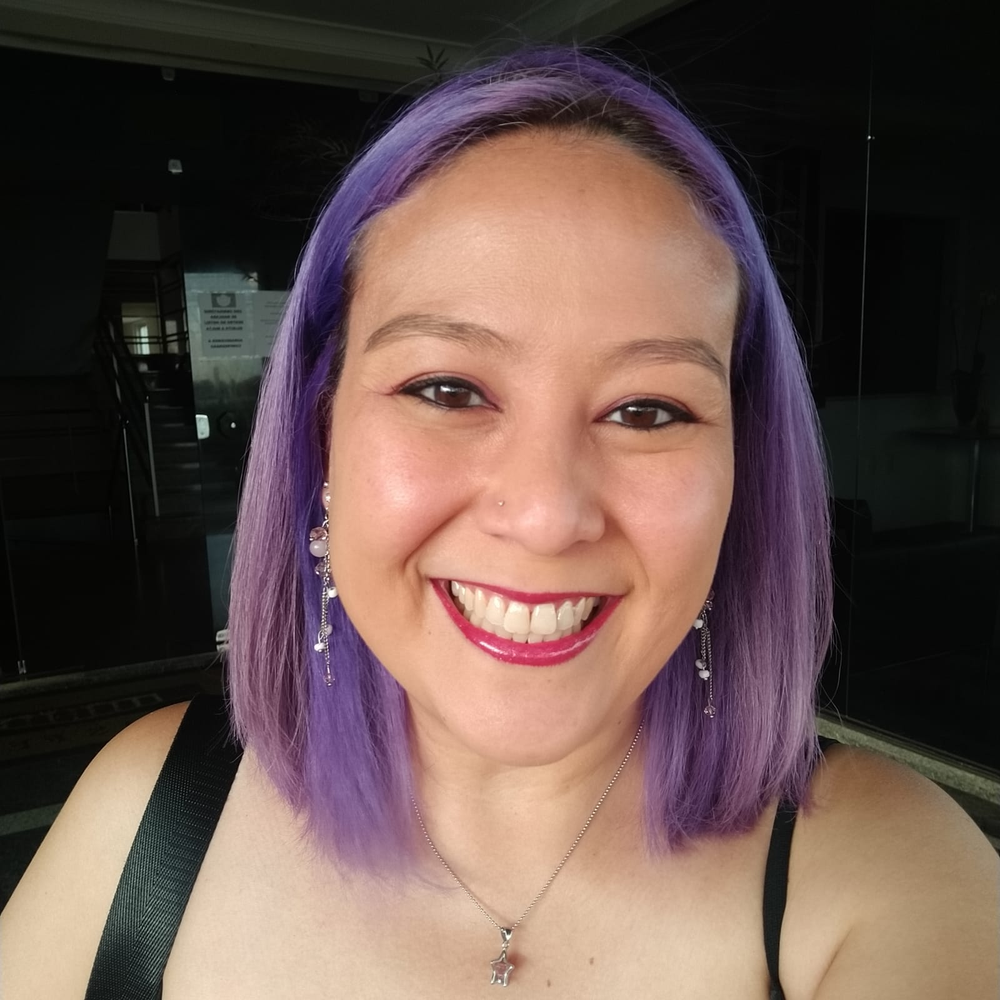

Me chamo Sheila Nakashima dos Santos.
Essa pessoa aí na foto sou eu! :D
Neste dia, eu estava indo para um casamento em Catanduva, sim, um pouco longe da minha casa.
E siiiiimmm! Meu cabelo estava SUPER roxo! Hahahahaha
Eu moro em Campinas, mas nasci em São Paulo.
Já morei também em Araraquara, Itapira e São Carlos, tudo dentro do estado de São Paulo.
Me formei em Farmácia-Bioquímica porque queria cuidar das pessoas,
mas com o tempo, descobri que gosto mesmo é de solucionar problemas e,
foi aí que a programação entrou na minha vida definitivamente,
apesar da minha família TODA ser da área!
Então, nessa nova jornada, começei em um curso de tecnóloga em Análise e Desenvolvimento de Software na Policamp.
E agora estou iniciando o curso de Desenvolvimento Web na Trybe.

Mesmo assim, eu tenho uma habilidade que sempre me acompanhou, não importa onde eu vou.
As pessoas gostam de conversar comigo sobre seus problemas,
pois sabem que podem contar comigo SEMPRE.
E minha animação faz qualquer um(a) se sentir melhor,
pois eu também gosto muito de me divertir e rir! :D
Pensando nisso, quero comprartilhar com vocês o site que eu mais gosto de ver! Quando eu tenho tempo livre, claro.
9GAGAhhhhh! Eu não posso esquecer de dizer que sou mãe de 2 bolas de pelo!
Essa aí na frente é a Nety, ela tem 14 aninhos e é a mais velha.
No fundo você pode ver o Davi, ele tem 11 aninhos.
Os dois foram adotados diretamente da rua e possuem personalidades completamente diferentes.
Se perdeu nesse monte de informação? Aqui eu montei um pequeno índice para você de achar.
Para saber mais, você pode ver meu LinkedIn aqui.